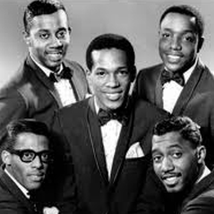
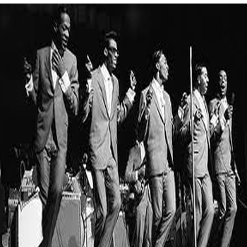
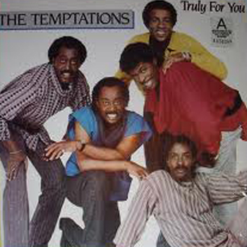

Unlike many other R&B groups, each member of the Temptations was a lead singer of some capacity, and The Temptations' songs depended upon the individual members' interaction as a group. Although the group always had an appointed main lead singer who dominated most of the lead vocals (from Paul Williams to David Ruffin, Dennis Edwards, and later singers such as Louis Price, Ali-Ollie Woodson, and Terry Weeks), that singer was never given more of a promotional push than the other members. Co-lead songs, with two or more of the singers sharing the lead vocals, are common in the Temptations catalog, particularly among the psychedelic-era recordings of the late 1960s/early 1970s.
The "Motown Sound" (1961–1968)
Following their first Motown hit, the group would alter their style several times over the ensuing years, adapting to the popular styles of the day while retaining their signature visual and vocal styles. The earliest Temptations recordings backed by Motown's stalwart studio band, the Funk Brothers, reflect the influence of producers Berry Gordy and Smokey Robinson, and featured a cohesive blend of black rhythm and blues along with elements of white pop music that later came to be known as the "Motown Sound". Recordings made prior to 1966 such as "My Girl", were built around songs with simple, direct lyrics supported by an R&B rhythm section with orchestral strings and horns added for pop appeal. During this period, each recording usually featured only one lead singer, usually David Ruffin or Eddie Kendricks, although Paul Williams, Melvin Franklin, and Otis Williams each had solo numbers of their own at various times during this period.
Melisma and other complicated vocalization techniques featured in the arrangements of most other Motown groups of the period were essentially eschewed by the Temptations for a more direct, yet obviously gospel-rooted vocal approach, in order to make the songs more palatable for white audiences. Creative control remained primarily in the hands of Smokey Robinson, although individual members of the Temptations periodically co-wrote some of their own songs, most frequently by Eddie Kendricks, who also handled the vocal arrangements for all of the Temptations' material.
In 1966, Norman Whitfield changed the group's dynamic, moving them away from the previous one lead singer model and adding elements derived from the rougher soul of artists such as James Brown, Wilson Pickett, and the performers at Stax Records. Whitfield and his lyricists crafted Temptations songs with shifts of dynamics, syncopated horn stabs, and more intricate harmony arrangements which spotlighted each singer's unique vocal range. Onstage, this change was reflected in the group's use of a custom-made four-headed microphone stand, (invented by David Ruffin), which allowed each member freedom to perform without having to all crowd around one or two microphones. Under Whitfield's control, the Temptations retained their white pop appeal, but also gained popularity amongst black audiences as well.
Psychedelic and cinematic soul (1968–1973)

When David Ruffin was replaced by Dennis Edwards, and Sly and the Family Stone became popular, Whitfield again restructured the Temptations' sound, this time driving the group almost completely into a "psychedelic soul" type sound. However, ballads in the traditional style of the group were still being recorded as B-sides and album fillers, with the lone exception being "Just My Imagination".
Most other recordings from this period in 1968–1970 such as "Cloud Nine" and "Psychedelic Shack" featured echoed vocal tracks, distorted guitar lines with prominent use of the wah-wah pedal, hard-hitting drums, and various stereo and other sound effects. The majority of these songs feature at least two lead singers and often, all five Temptations sang lead, trading bars à la the Family Stone. Dennis Edwards, whose vocal style had a rougher, more Southern-soul based sound than that of David Ruffin, was often featured prominently on most of these recordings.
Inspired heavily by the concurrent works of Sly Stone, the lyrics for these songs centered primarily around then-current social issues such as integration, the Vietnam War, and self-consciousness. In addition, in an attempt to get the social message contained therein across to their audiences more clearly, many of the psychedelic soul recordings of this period were presented in mixes of extended length, often up to twice, triple or quadruple the length of the typical three-minute Motown song.
Tracks such as the album version of "Run Away Child, Running Wild" from Cloud Nine, "Take a Stroll Thru Your Mind" from Psychedelic Shack, and "Smiling Faces Sometimes" from Sky's the Limit, all run at least eight minutes. At the insistence of Norman Whitfield, a large portion of the additional running time for each song consisted of instrumental passages without vocals. For example, the hit version of their smash 1972 single "Papa Was a Rolling Stone" was nearly seven minutes, featuring an instrumental intro that was almost two minutes, a rarity for songs of that era.
"Psychedelic soul" soon gave way to "cinematic soul", highlighting a further series of lengthy recordings featuring detailed orchestration, extended instrumental introductions and bridging passages. Often focusing on lyrics about the ghettos and inner cities of black America, these songs were heavily influenced by the work of singer-songwriters Isaac Hayes and Curtis Mayfield. Unlike Hayes and Mayfield however, the Temptations had no creative control over their recordings, and were in no way fond of the twelve- and thirteen-minute long songs being forced upon them by Norman Whitfield, whose contributions were the focal point of Temptations albums such as Solid Rock, All Directions, and particularly Masterpiece.
From funk to disco to adult contemporary (1974 to present)
In 1974, after Whitfield was dismissed as the producer for the Temptations, the group altered its sound to accommodate a balance of both up-tempo dance material as well as ballads. The vocal arrangements began to again focus primarily on one lead singer per track, although some leads were still being shared periodically. In addition, the Temptations themselves, after fighting Motown and Berry Gordy for creative control, began to write and produce some of their own material. From this point on, the Temptations focused almost exclusively on songs about romance. However, songs about social issues similar to the recordings made during the tenure of Norman Whitfield were periodically produced as well.
Temptations recordings of the mid `70's focused significantly on the influences of funk music from artists such as Parliament-Funkadelic and Sly and the Family Stone, and members of both acts contributed significantly to material recorded by the group during this period. In addition, their signature ballad sound, reduced to filler material during much of the Whitfield period, was restored to the lush, full productions of the earlier hits produced by Smokey Robinson. After a brief diversion into disco in the late-1970s, the Temptations settled into a form of an adult contemporary-rooted type of R&B, a style in which they continue to record.
Although the group continues to feature dancing as an important aspect of its act, as the ages of its members have increased, live shows have focused on less intricate choreography.